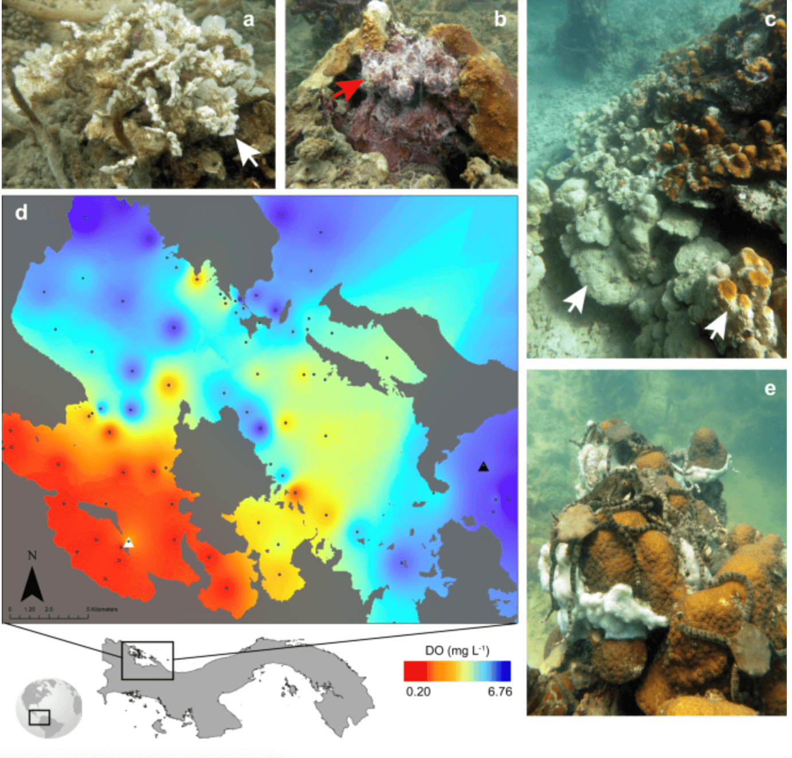

Websites
Websites I created for different projects and publications. Each website provides access to raw data and complete analytic workflows.
Istmobiome
Grant website. Gordon & Betty Moore Foundation project Divergence of Marine Symbiosis After the Rise of the Isthmus of Panama

Hypocolypse
Publication workflows. Rapid ecosystem-scale consequences of acute deoxygenation on a Caribbean reef.

Presentations
Here are a few web-based html presentations I created using R Markdown.
Documents
Some examples of pdf documents I created using R Markdown.
No matching items